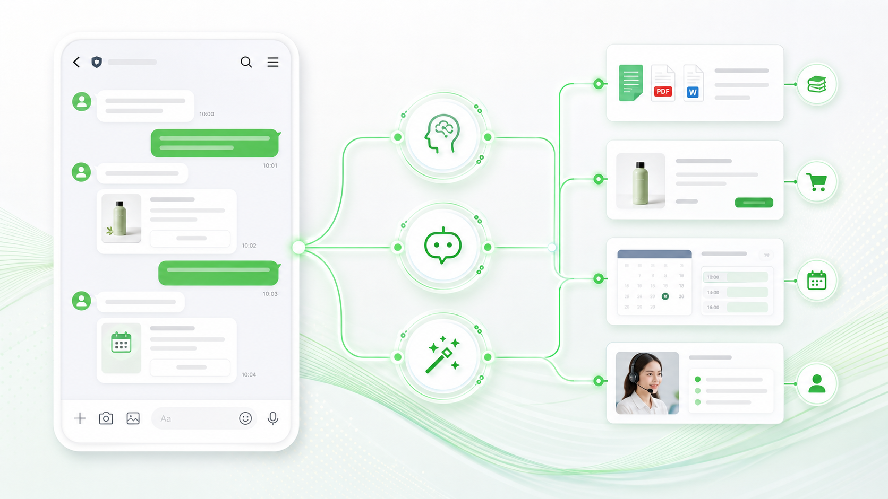

Supervisor Agent
總控負責理解客戶意圖、選擇流程、管理 conversation state，並判斷是否要追問、轉真人或交給其他 agent。
- 判斷 `faq_question`、`add_to_cart`、`booking`、`human_handoff`
- 管理目前步驟：收集資訊、等待確認、執行、完成
- 高風險或低信心時停止自動回答
這個架構把 LINE Official Account 當成客戶入口，由後端 Orchestrator 管理對話狀態、RAG 知識查詢、交易工具、預約流程與真人接手。LLM 負責理解自然語言，真正的操作則由受控的 tools 執行。

Core Architecture
最穩的方式是讓 Orchestrator 掌握狀態與規則：AI 可以理解問題、選擇工具、整理回覆；但加入購物車、建立預約、購票或轉真人，都必須經過後端 workflow。
Agent Team
真正可靠的 agent team 不是每個 agent 都什麼都能做，而是每個角色只負責自己的判斷範圍，並且只能使用被允許的 tools。
負責理解客戶意圖、選擇流程、管理 conversation state，並判斷是否要追問、轉真人或交給其他 agent。
只負責查已核准的內部文件，例如 SOP、產品規格、FAQ、政策與規範，並回傳可引用的答案依據。
負責呼叫實際業務工具，例如商品查詢、加入購物車、預約球場、保留票券與建立訂單。
Routing Strategy
Agentic workflow 最容易出問題的地方，是把所有訊息都丟給同一個模型自由處理。比較穩的做法是 hard rules 優先，再用 LLM classifier 判斷 intent。
| 客戶意圖 | Routing | 需要的工具 | 確認規則 |
|---|---|---|---|
| 詢問 SOP、FAQ、產品規格 | Knowledge Agent | RAG search、document citation | 不需要確認，但要標記資料來源 |
| 查商品、規格、庫存、價格 | Transaction Agent | product search、inventory API | 只查詢不需確認 |
| 加入購物車、建立預約、保留票券 | Transaction Agent + Workflow | cart API、booking API、ticket API | 執行前必須回 LINE 要求明確確認 |
| 付款、退款、取消訂單、客訴 | Human Handoff | ticket、notification、agent dashboard | 預設轉真人，不讓 AI 自行決定 |
| 問題不清楚或連續失敗 | Supervisor Agent | clarifying question、conversation state | 最多追問 1 到 2 次，再轉真人 |
Human Handoff & Audit
客戶端仍然只看到 LINE OA。內部則由系統建立 ticket、通知客服、把 conversation 狀態改成人工接手，並停止 AI 自動回覆。Audit log 則放在後台的稽核紀錄，用來還原「AI 為什麼這樣判斷、誰接手、哪個工具被執行」。
Supervisor 偵測到退款、客訴、法律、合約、付款失敗、低信心回答，或客戶要求「我要找真人」。
LINE OA 回：「這個問題我幫你轉給客服專員，請稍候。」讓客戶知道 AI 已停止自行處理。
系統建立客服案件，附上對話摘要、轉接原因、建議部門、客戶資訊與 AI 已查過的文件。
`conversation.status` 從 `ai_active` 改成 `human_pending` 或 `human_active`，後續訊息只通知客服，不再讓 AI 回客戶。
真人在客服後台輸入回覆，系統用 LINE Reply / Push API 以 OA 身分回給客戶；結案後再切回 AI。
建議放在後台的「稽核紀錄 / Audit」頁，也可以嵌在每個 conversation 或 ticket 的右側時間軸。它不是給客戶看的，而是給客服主管、營運、工程與稽核人員追查用。
Design Choice
RAG bot 解決的是「回答準不準」；agentic workflow 解決的是「事情能不能被安全地完成」。兩者不是互斥，正式系統通常會同時需要。
Build Roadmap
第一版不要追求全自動。先選一個明確 action，例如加入購物車或預約球場，跑通 LINE 對話、工具呼叫與確認流程。
建立 Messaging API webhook、驗證 signature，將每則訊息寫入 Supabase，形成可追蹤的 conversation history。
實作 Supervisor classifier，將 FAQ 類問題 route 到 Knowledge Agent，先讓系統能穩定根據文件回答。
先接一個 action，例如 `addToCart` 或 `createBooking`，用固定 workflow 管理缺少資訊、確認與執行。
加入真人接手、ticket 指派、AI 停止自動回覆、客服後台與操作紀錄，讓系統可以正式營運。
Guardrails
Prompt 可以提醒 agent，但不能取代權限、狀態機、工具 schema、審計紀錄與人工接手。下面這些規則應該寫在系統層。
Agent 只能呼叫你定義好的 tools，不能直接改 database，也不要自由操作第三方網站。
加入購物車、建立預約、購票、付款、取消訂單等動作，必須先向客戶確認。
退款、客訴、法律、合約、付款失敗、低信心回答，直接建立 ticket 並停止 AI 自動回覆。
每次 tool call 都要記錄 input、output、使用者確認內容、執行結果與負責 agent。
if (conversation.status === "human_active") {
return notifyAssignedAgent(message)
}
const route = await supervisor.classify(message)
if (route.risk === "high") {
return createHumanTicket(route.reason)
}
if (route.intent === "faq_question") {
return knowledgeAgent.answerWithRag(message)
}
if (route.requiresAction) {
const draft = await transactionAgent.prepare(route)
return askForConfirmation(draft)
}
if (userConfirmedPendingAction(message)) {
return executeApprovedTool(conversation.pendingAction)
}Appendix
Agentic workflow 不只是技術架構。使用者感受到的速度、清楚度、控制感，以及內部能不能把真人接手管理好，會直接決定這套系統能不能正式營運。
LINE 對話最怕讓客戶等在黑洞裡。最好的體驗不是每個任務都 1 秒完成，而是 1 秒內讓使用者知道系統正在處理，並且每一步都清楚告訴他下一步是什麼。
如果真人客服只是偶爾看 LINE OA，可以先手動處理；但只要你希望 AI 正式轉真人、指派客服、追蹤處理進度，就需要 ticket / case management。它可以先很輕量，不一定一開始就導入大型客服平台。
| 沒有 Ticket | 有 Ticket |
|---|---|
| 客服不知道哪些案件待處理。 | 每筆轉真人都有 open / assigned / resolved 狀態。 |
| 多位客服可能重複回覆同一位客戶。 | 可以指派 owner、team、priority 與 SLA。 |
| AI 不知道何時該停止或恢復自動回覆。 | `conversation.status` 控制 AI 是否可以回覆。 |
| 主管難以追查客訴、退款、付款爭議。 | ticket 詳情頁保留對話、摘要、回覆與 audit timeline。 |
最好的 MVP 是「LINE 問答 + 文件 RAG + 一個 action tool + 明確確認 + 真人接手」。這條路跑穩後，再擴到購票、預約、訂單查詢與更多 agent。